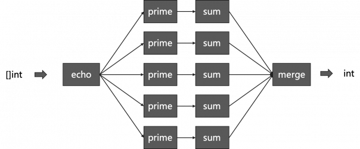

管道
Table of Contents
对于Pipeline用过Unix/Linux命令行的人都不会陌生，它是一种把各种命令拼接起来完成一个更强功能的技术方法 Pipeline可以很容易的把代码按单一职责的原则拆分成多个高内聚低耦合的小模块，然后可以很方便地拼装起来去完成比较复杂的功能 今天，流式处理，函数式编程，以及应用网关对微服务进行简单的API编排，其实都是受pipeline这种技术方式的影响
HTTP
上一节有过一个示例，有一堆如 WithServerHead() 、WithBasicAuth() 、WithDebugLog()这样的小功能代码，在需要实现某个HTTP API 的时候，可以很容易的组织起来：
http.HandleFunc("/v1/hello", WithServerHeader(WithAuthCookie(hello))) http.HandleFunc("/v2/hello", WithServerHeader(WithBasicAuth(hello))) http.HandleFunc("/v3/hello", WithServerHeader(WithBasicAuth(WithDebugLog(hello))))
通过一个代理函数：
type HttpHandlerDecorator func(http.HandlerFunc) http.HandlerFunc func Handler(h http.HandlerFunc, decors ...HttpHandlerDecorator) http.HandlerFunc { for i := range decors { d := decors[len(decors)-1-i] // iterate in reverse h = d(h) } return h }
可以移除不断的嵌套像下面这样使用了：
http.HandleFunc("/v4/hello", Handler(hello, WithServerHeader, WithBasicAuth, WithDebugLog))
Channel 管理
当然，如果要写出一个泛型的pipeline框架并不容易，必须要使用Go Generation
但是，别忘了Go语言最具特色的 Go Routine 和 Channel 这两个神器完全也可以被用来构造这种编程
Rob Pike在 Go Concurrency Patterns: Pipelines and cancellation 这篇blog中介绍了如下的一种编程模式
Channel转发函数
首先，需一个 echo() 函数，其会把一个整型数组放到一个Channel中，并返回这个Channel：
func echo(nums []int) <-chan int { out := make(chan int) go func() { for _, n := range nums { out <- n } close(out) }() return out }
然后，依照这个模式，可以写下：
- 平方函数
func sq(in <-chan int) <-chan int { out := make(chan int) go func() { for n := range in { out <- n * n } close(out) }() return out }
- 过滤奇数函数
func odd(in <-chan int) <-chan int { out := make(chan int) go func() { for n := range in { if n%2 != 0 { out <- n } } close(out) }() return out }
- 求和函数
func sum(in <-chan int) <-chan int { out := make(chan int) go func() { var sum = 0 for n := range in { sum += n } out <- sum close(out) }() return out }
可能会觉得，sum()，odd() 和 sq()太过于相似 其实可以通过之前的Map/Reduce编程模式或是Go Generation的方式来合并一下
然后，可以把这一系列的函数组合起来：
var nums = []int{1, 2, 3, 4, 5, 6, 7, 8, 9, 10} for n := range sum(sq(odd(echo(nums)))) { fmt.Println(n) }
上面的代码类似于执行了Unix/Linux命令： echo $nums | sq | sum
如果不想有那么多的函数嵌套，也可以使用一个代理函数来完成：
type EchoFunc func ([]int) (<- chan int) type PipeFunc func (<- chan int) (<- chan int) func pipeline(nums []int, echo EchoFunc, pipeFns ... PipeFunc) <- chan int { ch := echo(nums) for i := range pipeFns { ch = pipeFns[i](ch) } return ch }
最后：
var nums = []int{1, 2, 3, 4, 5, 6, 7, 8, 9, 10} for n := range pipeline(nums, echo, odd, sq, sum) { fmt.Println(n) }
Fan in/Out
动用Go语言的 Go Routine 和 Channel 还有一个好处，就是可以写出1对多，或多对1的pipeline，也就是Fan In/ Fan Out
下面来看一个 Fan in 的示例：
想通过并发的方式来对一个很长的数组中的质数进行求和运算，想先把数组分段求和，然后再把其集中起来
下面是主函数：
func makeRange(min, max int) []int { a := make([]int, max-min+1) for i := range a { a[i] = min + i } return a } func main() { nums := makeRange(1, 10000) in := echo(nums) const nProcess = 5 var chans [nProcess]<-chan int for i := range chans { chans[i] = sum(prime(in)) } for n := range sum(merge(chans[:])) { fmt.Println(n) } }
再看 prime() 函数的实现 ：
func is_prime(value int) bool { for i := 2; i <= int(math.Floor(float64(value) / 2)); i++ { if value%i == 0 { return false } } return value > 1 } func prime(in <-chan int) <-chan int { out := make(chan int) go func () { for n := range in { if is_prime(n) { out <- n } } close(out) }() return out }
可以看到：
- 先制造了从1到10000的一个数组
- 把这堆数组全部 echo到一个channel里 in
- 生成 5 个 Channel，然后都调用 sum(prime(in)) ，于是每个Sum的Go Routine都会开始计算和
- 最后再把所有的结果再求和拼起来，得到最终的结果
其中的merge代码如下：
func merge(cs []<-chan int) <-chan int { var wg sync.WaitGroup out := make(chan int) wg.Add(len(cs)) for _, c := range cs { go func(c <-chan int) { for n := range c { out <- n } wg.Done() }(c) } go func() { wg.Wait() close(out) }() return out }
用图片表示一下，整个程序的结构如下所示：
